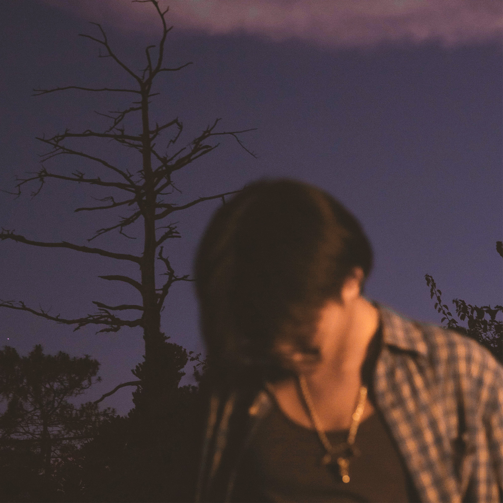

enter leafo's mind: II

hope yall r enjoying this no matter how many times it has been delayed
"find what you love and let it kill you" is a poem written by charles bukowski... inspired by bukowski, i wrote this album and made it about how we love things so deeply that they start to wear you down; people, moments, & memories... its about knowing something might hurt you but still choosing it because its real... i never intended to make anything this dark as i wanted to write everything i have felt and thought of for the past two years and a half while being honest... like how the things we care about the most will change us, or hurt us, or probably even shape us weirdly; and if theyre strong enough, theyll leave a mark... this album is about that mark, and id honestly rather be scarred by something real than be untouched by something fake...
started making this album 8/25/24, had ts revamped and restarted from scratch thrice. if it doesnt sound well for you then ok lol get off my dick idk. ill make a better one soon, ts was hella rushed after all the revamps. all thanks are in order.
first of all, thank you to everest cuz ong u carried the album so hard. almost every song is literally produced by jit lmao. thank you also to shade08, julian ceasar, chibi and love is war for producing the rest <3 yall helped my thoughts become a reality and shaped into audio form and i cannot thank yall enough. also thanks mac demarco i sampled ya shit lol.
secondly, shout out my brothers from frequency. started ts wit my twin, my brother from another mother and a person im glad to call a best friend: gabluhv. shoutout t-fi, aumi, robb and lemon <3
thank you rainnier / ren (shout out to this guy bruh) for co-directing the visuals for the entire album with my picky and lazy ass. dude without you, i think the album cover would be another sky or a blurry road lol. id dm u at like two am on a random tuesday abt this cool ass idea for either a music video or sum marketing / promoting video and youd instantly reply saying "yk what yeah thats cool lets run it" LMFAO but ong, thanks so much twin for helping me form this fuckass album visually.
i had this dream since 2016, ive been writing since 2017 as a diss track youtuber (lol lowkey cringe but i was ten fuck off), ive been recording since 2018 (emo cringe rap era), i took a hiatus from 2020, revamped my whole sound in 2022 (h*perp*p/d*g*c*re 💔🥀) then switched genres again last 2024. was pretty dogshit throughout those years ill admit but yall still kept pushing me and helped me grow and i love yall sm holy fuck.
shoutout my family and my irls, yall helped me to keep pushing forward with this music thing and i will always cherish the things yall have done. yall kept supporting me with wtv the fuck this is and imglad to be surrounded with people i love. :D
of course, shoutout my day ones !! legit, thank yall bradly, kryst, ckeisha, karl, angelo, xyruz (also massive Ws to kryst for introducing me to gabluhv. wouldve never met this jackoff without ya jit <3)
lowkey a lil weird thing to do LOL but thank you to both my exes ig. yall were the sole inspirations and what i mainly based the album from loooool
and to you; either youre a viewer or a listener or an observer or maybe you dont know what the hell is going on as you clicked the link lol, thank you. ive been doing this music bs for quite some time, i have been inlove with it ever since and i will keep on doing it til the day i fucking die. yall watched me grow physically and mentally as my music progressed and lowkey i love yall for that. i made new friends, i found love, i ran through heartbreaks, ive had falling outs, i had my ups and i had my downs but thats part of growing up and im so glad i could share it with you all. ive always seen myself as a no-life that i remember crying one time cuz i was scared cuz i had no ideas & no plans for what i wanted my future to be. i sacrificed a lot and almost lost everything just to achieve this dream of mine which still has more to be done. i am a lazy person, and pushing myself to finish this 16-song album (hella delays i know im sorry) helped me get out of that cycle of procrastination and actually lock the fuck in. i hope yall enjoy / enjoyed this collection of the thoughts i have had throughout my life lol. see yall next project but til then, enjoy the album :DD.
- leafo <3